Modelling Radical Pair Quantum Spin Dynamics with Tensor Networks
Overview
Reference and Link

- Hino, Frantzov, Antill, & Kurashige (2025). Introduction of modelling radical pair quantum spin dynamics with tensor networks. arXiv:2510.22104 [quant-ph].
- https://arxiv.org/abs/2509.22104
Paper at a Glance
Goal
To introduce tensor-network methods for simulating the complete open quantum dynamics of radical-pair systems, including many nuclear spins.
Contributions
- Three tensor-network formalisms: MPS, vectorised MPDO, and locally purified MPS.
- A detailed convergence study on a system with 18 nuclei.
- Application to anisotropic magnetosensitivity in flavin–tryptophan radical pairs.
Why It Matters
Provides an accurate, scalable simulation framework relevant to spin chemistry, quantum biology (e.g., avian magnetoreception), and spintronics.
Motivation: The Importance of Radical-Pair Spin Dynamics
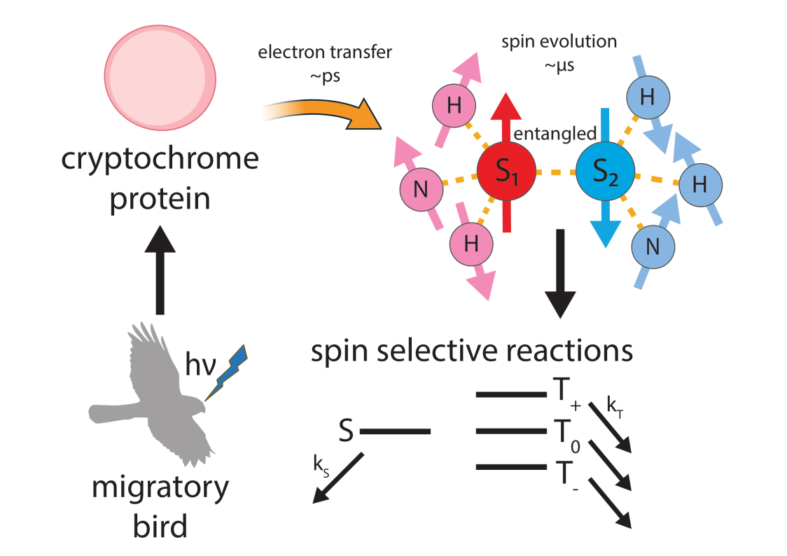
- Quantum spin relaxation underpins the interpretation of EPR/NMR and many excited-state phenomena.
- Radical pairs are key intermediates in organic semiconductors, molecular qubits, and models of avian magnetoreception.
- Realistic predictions require handling arbitrary field orientations, anisotropic hyperfine couplings, and dissipation.
Three Key Computational Challenges
1. The Initial State
At room temperature, nuclear spins are in a highly mixed state. This necessitates ensemble averaging over all possible nuclear configurations.
2. Exponential Complexity
The state space (Hilbert or Liouville) grows exponentially with the number of nuclei
\[ \text{Hilbert dim: } d_H = 2^2 \prod_{k=1}^{N}(2I_k+1), \quad \text{Liouville dim: } d_L = d_H^2 \]
3. Long-Time Dynamics
Simulating evolution on nanosecond-to-microsecond timescales requires numerically stable integrators. Often, ultrafast motions are averaged out (e.g., Redfield theory), which can miss non-Markovian effects.
Energy-level hierarchy
- Electronic Levels: \(\sim 8000~\mathrm{cm}^{-1}\) (\(\sim 1~\mathrm{eV}\)) \(\rightarrow\) Visible absorption
- Vibrational Levels: \(\sim 3000~\mathrm{cm}^{-1}\) \(\rightarrow\) Femtosecond dynamics
- Rotational Levels: \(0.1-10~\mathrm{cm}^{-1}\) \(\rightarrow\) Picosecond dynamics
- Electron Spin Splittings: \(10^{-4} - 1~\mathrm{cm}^{-1}\) \(\rightarrow\) MHz–GHz dynamics
Radical Pair Basics & Hamiltonian
The Radical Pair Formation Process
- Photoexcitation: Acceptor A absorbs photon to form excited state \(A^\ast\).
- Charge Transfer: Electron moves from donor D to \(A^\ast\), forming radical pair \(D^{\bullet+}|A^{\bullet-}\) in singlet state \(|S\rangle\).
- Intra-pair Interactions: Unpaired electrons interact through exchange (\(J\)) and dipolar (\(\mathbf{D}\)) couplings.
- Hyperfine Coupling: Electron spins couple to nuclear spins via tensors (\(\mathbf{A}_{i,j}\)), enabling singlet-triplet conversion.
- Zeeman Effect: External field \(\mathbf{B}\) sets precession axes and affects spin-selective reaction yields.
The Singlet–Triplet (ST) Basis
From Zeeman to ST Basis
\[ \begin{align*} |S\rangle & = \tfrac{1}{\sqrt{2}}\big(|\uparrow\downarrow\rangle-|\downarrow\uparrow\rangle\big), \\ |T_{+}\rangle &=|\uparrow\uparrow\rangle, \\ |T_0\rangle & = \tfrac{1}{\sqrt{2}}\big(|\uparrow\downarrow\rangle+|\downarrow\uparrow\rangle\big), \\ |T_{-}\rangle &=|\downarrow\downarrow\rangle. \end{align*} \]
\(\mathbf{S}_1 \cdot \mathbf{S}_2\) Operator and Projectors
The operator \(\hat{\mathbf{S}}_1 \cdot \hat{\mathbf{S}}_2 = \tfrac{1}{2}(\hat{\mathbf{S}}^2-\hat{\mathbf{S}}_1^2-\hat{\mathbf{S}}_2^2)\) yields eigenvalues of \(-\frac{3}{4}\) for the singlet state and \(+\frac{1}{4}\) for triplet states (with \(\hbar=1\)). This allows us to define the projection operators:
\[ \begin{align*} \hat{P}_S & = |S\rangle\langle S| = \tfrac{1}{4}\mathbb{1} - \hat{\mathbf{S}}_1 \cdot \hat{\mathbf{S}}_2, \\ \hat{P}_T & = \mathbb{1} - \hat{P}_S = \tfrac{3}{4}\mathbb{1} + \hat{\mathbf{S}}_1 \cdot \hat{\mathbf{S}}_2. \end{align*} \]
The Radical Pair Hamiltonian
\[ \hat{H}_{\text{total}} = \underbrace{\hat{H}_{\text{Z}}}_{\text{Zeeman}} + \underbrace{\hat{H}_{\text{H}}}_{\text{Hyperfine}} + \underbrace{\hat{H}_{\text{J}}}_{\text{Exchange}} + \underbrace{\hat{H}_{\text{D}}}_{\text{Dipolar}} + \underbrace{\hat{H}_{\text{K}}}_{\text{Reaction}} \]
\[ \begin{align*} \hat{H}_{\text{Z}} & = -\gamma_e \mathbf{B}^{\top} \cdot \sum_{i=1}^{2}\hat{\mathbf{S}}_i - \sum_{i=1}^{2}\sum_{j=1}^{N_i}\gamma^{(n)}_{i,j} \mathbf{B}^{\top} \cdot \hat{\mathbf{I}}_{i,j}, \\ \hat{H}_{\text{H}} & = \sum_{i=1}^{2}\sum_{j=1}^{N_i}\hat{\mathbf{S}}_i^{\top} \cdot \mathbf{A}_{i,j} \cdot \hat{\mathbf{I}}_{i,j}, \\ \hat{H}_{\text{J}} & = -2J \hat{\mathbf{S}}_1^{\top} \cdot \hat{\mathbf{S}}_2, \\ \hat{H}_{\text{D}} & = \hat{\mathbf{S}}_1^{\top} \cdot \mathbf{D} \cdot \hat{\mathbf{S}}_2, \\ \hat{H}_{\text{K}} & = -\tfrac{i}{2}\big(k_S \hat{P}_S + k_T \hat{P}_T\big). \quad\text{(Haberkorn Model)} \end{align*} \]
- \(\hat{\mathbf{S}}_i = [\hat{S}_i^x, \hat{S}_i^y, \hat{S}_i^z]\): spin of electron \(i\); \(\hat{\mathbf{I}}_{i,j} = [\hat{I}_{i,j}^x, \hat{I}_{i,j}^y, \hat{I}_{i,j}^z]\): spin of \(j\)-th nucleus coupled to electron \(i\).
- \(\mathbf{A}_{i,j}\): hyperfine tensor; \(\mathbf{D}\): dipolar tensor; \(J\): exchange coupling
- \(k_S, k_T\): spin-selective reaction rates.
Gyromagnetic Ratios & Spin Quantum Numbers
| Species | Spin (\(I\) or \(S\)) | \(\boldsymbol{\gamma}\) [rad s\(^{-1}\) T\(^{-1}\)] | Notes |
|---|---|---|---|
| Electron \(e^-\) | \(S=1/2\) | \(-1.76 \times 10^{11}\) | negative sign |
| \(^{1}\mathrm{H}\) | \(I=1/2\) | \(2.68 \times 10^8\) | Proton |
| \(^{14}\mathrm{N}\) | \(I=1\) | \(1.93 \times 10^7\) | Three levels (\(2I+1=3\)) |
| \(^{13}\mathrm{C}\) | \(I=1/2\) | \(6.73 \times 10^7\) | (\(^{12}\mathrm{C}\) is spin-0) |
- The electron gyromagnetic ratio \(\gamma_e\) is $$1000 times larger than that of nuclei.
- Nuclear-nuclear spin interactions are negligible on the microsecond timescale.
- The Earth’s magnetic field (\(\sim 0.05~\mathrm{mT}\)) induces a tiny electronic Zeeman splitting (\(\sim 70~\mu\text{K}\)).
- EPR experiments are typically conducted at much higher fields (\(\sim 1~\mathrm{T}\)).
Electron–Electron Coupling: \(\mathbf{C} = \mathbf{D} - 2J\mathbb{1}\)
The total spin-spin interaction can be written as:
\[ \hat{H}_{\text{SS}} = \hat{\mathbf{S}}_1^{\top} \mathbf{C} \hat{\mathbf{S}}_2 = \hat{\mathbf{S}}_1^{\top} \mathbf{D} \hat{\mathbf{S}}_2 - 2J \hat{\mathbf{S}}_1 \cdot \hat{\mathbf{S}}_2 \]
Physical Meaning
- Exchange (\(J\)): Arises from the exchange integral. It determines the singlet-triplet energy gap, \(\Delta E_{ST}=2J\). It typically decays exponentially with inter-radical distance: \(J(r) \approx J_0 e^{-r/a}\).
- Dipolar Tensor (\(\mathbf{D}\)): A through-space magnetic dipole-dipole interaction. It lifts the degeneracy of the triplet sublevels (zero-field splitting). In the point-dipole approximation: \[ \mathbf{D} = \frac{\mu_0}{4\pi} \frac{(\gamma_e\hbar)^2}{r^3} \big(\mathbb{1} - 3\hat{\mathbf{r}}\hat{\mathbf{r}}^{\top}\big) \] \(|\mathbf{D}|\) decays as \(r^{-3}\), dominating over \(J\) at long range.
The Magnetic Field Effect (MFE)
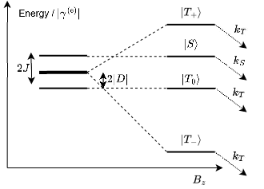- Hyperfine-driven \(S \leftrightarrow T\) interconversion is modulated by the external field \(\mathbf{B}\) (both its magnitude and orientation).
- Since recombination rates are spin-dependent (e.g., the singlet state recombines faster), the overall product yield becomes sensitive to the magnetic field. \[ \Phi_S(\mathbf{B}) = k_S \int_{0}^{\infty} dt\, \mathrm{Tr}\big[\rho(t;\mathbf{B})\,\hat{P}_S\big]. \]
The Liouville-von Neumann Equation
The Density Operator (Statistical Mixture of Nuclear Spin States)
\[ \rho = \sum_{p} w_p |\psi_p\rangle\langle\psi_p|, \quad \text{with } w_p \ge 0, \sum_p w_p = 1. \]
For a pure state, \(\rho=|\psi\rangle\langle\psi|\) (single wavefunction).
Equation of Motion
From the Schrödinger equation, \(i\hbar \frac{d}{dt}|\psi\rangle = H |\psi\rangle\), we can derive the equation of motion for the density operator:
\[ \frac{d\rho}{dt} = -\frac{i}{\hbar}[H, \rho] \]
The solution, \(\rho(t) = U(t)\rho(0)U^\dagger(t)\), represents a completely positive and trace-preserving (CPTP) map, ensuring the physicality of the density operator at all times.
Efficient Computation via Liouville-Space Vectorisation
Start with the full Liouville-von Neumann equation including reaction terms:
\[ \dot{\rho} = -i[H,\rho] - \frac{k_S}{2}\{P_S,\rho\} - \frac{k_T}{2}\{P_T,\rho\}. \]
Vectorisation reshapes operators into vectors in a “doubled” state space:
\[ \rho \mapsto |\rho\rangle\rangle \in \mathcal{H} \otimes \mathcal{H}, \quad \text{where } \mathrm{vec}(A\rho B)=(B^{\top} \otimes A)|\rho\rangle\rangle. \]
The equation of motion becomes a linear differential equation:
\[ i\,\partial_t |\rho\rangle\rangle = \hat{\hat{L}}_0 |\rho\rangle\rangle, \quad \text{with } \hat{\hat{L}}_0 = \mathbb{1} \otimes H - H^{\top} \otimes \mathbb{1} - \frac{i}{2}\sum_{A=S,T} (P_A \otimes \mathbb{1} + \mathbb{1} \otimes P_A^{\top}). \]
The Room-Temperature Initial State
Nuclear Zeeman energies are far smaller than \(k_B T\), so all nuclear spin states are almost equally populated.
\[ e^{-\beta H_{\text{nuc}}} \approx \mathbb{1}_{\text{nuc}} \implies \boxed{ \rho_0 \approx P_S \otimes \frac{\mathbb{1}_{\text{nuc}}}{Z_{\text{nuc}}} }, \quad Z_{\text{nuc}}=\prod_k (2I_k+1). \]
This corresponds to an incoherent average over all nuclear product states:
\[ \rho_0 = \frac{1}{Z_{\text{nuc}}}\sum_{\mathbf{m}} \big(P_S \otimes |\mathbf{m}\rangle\langle\mathbf{m}|\big), \quad |\mathbf{m}\rangle=\bigotimes_k |m_k\rangle. \]
An Alternative: Stochastic Schrödinger Equation (SSE)
- Uniformly sample an ensemble of initial nuclear states \(\{|\mathbf{m}_p\rangle\}_{p=1}^{N_{\text{traj}}}\).
- For each sample, propagate a wavefunction with an effective Hamiltonian: \(i\partial_t|\Psi_p\rangle = H_{\text{eff}}|\Psi_p\rangle\), where \(|\Psi_p(0)\rangle=|S\rangle\otimes|\mathbf{m}_p\rangle\).
- Average the results to estimate observables: \(\langle P_S(t)\rangle \approx \frac{1}{N_{\text{traj}}}\sum_p \langle\Psi_p(t)|P_S|\Psi_p(t)\rangle\).
Evaluating \(\langle P_S(t)\rangle\) via spin coherent states
\[ \langle P_S(t)\rangle \;=\; \mathrm{Tr}\!\left[P_S\,\rho(t)\right],\quad \rho(t)=U(t)\rho(0)U^\dagger(t). \]
The spin coherent states \(|\Omega_k\rangle = |\theta_k, \phi_k\rangle = (1+|\zeta_k|^2)^{-I_k} e^{\zeta_k \hat{I}_{-}} |m_z=I_k\rangle\), where \(\zeta_k = e^{i \phi_k} \tan(\theta_k/2)\), obey the resolution of identity:
\[ \bigotimes_{k=1}^{N_{\rm nuc}}\!\mathbb{1}_k \;=\; \bigotimes_{k=1}^{N_{\rm nuc}} \frac{2I_k+1}{4\pi} \int_0^{2\pi} d\phi_k \int_0^{\pi} d\theta_k \sin(\theta_k) |\Omega_k\rangle\!\langle\Omega_k|. \]
At room temperature one often has \(\rho(0)\propto P_S\otimes \mathbb{1}_{\rm nuc}\), giving
\[ \langle P_S(t)\rangle \;=\; \int \! d\boldsymbol{\Omega}\; p(\boldsymbol{\Omega})\; \langle S, \boldsymbol{\Omega} | U^\dagger(t) P_S U(t) | S, \boldsymbol{\Omega} \rangle. \]
Note
Spin coherent state basis \(|\boldsymbol{\Omega}\rangle\) converges faster than the product basis \(|\mathbf{m}\rangle\) in the stochastic Schrödinger equation.
Tensor network methods
Low-Rank Approximation via SVD
Best Rank-\(r\) Approximation
For any matrix \(X\), the singular value decomposition (SVD) is \(X = U\Sigma V^\dagger\). The best rank-\(r\) approximation to \(X\) is found by keeping only the \(r\) largest singular values:
\[ X_r = \sum_{i=1}^{r} \sigma_i \mathbf{u}_i \mathbf{v}_i^\dagger \quad (r < \mathrm{rank}(X)) \]
This truncation minimises the Frobenius norm of the error on the low-rank manifold \(\mathcal{M}_r=\{Y:\,\mathrm{rank}(Y)\le r\}\):
\[ X_r = \arg\min_{Y \in \mathcal{M}_r} \| X - Y \|_F \]
Physical Intuition
The largest singular values capture the main features of the matrix. Discarding small ones compresses the data, as in image compression and tensor networks.
SVD as Image Compression
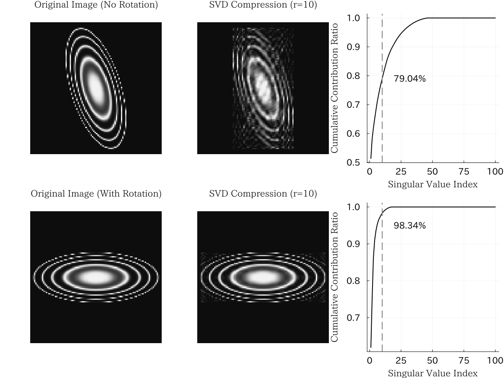Diagrammatic Tensor Notation
We can represent tensors graphically to make complex contractions intuitive.
- A node represents a tensor.
- A leg (or edge) represents an index.
- Connecting legs implies summation over the shared index (contraction).
SVD as a Tensor Network: A matrix (rank-2 tensor) is decomposed into a chain of three tensors.
Matrix Product States (MPS)
The MPS Ansatz
A many-body quantum state can be efficiently represented by factorising its coefficient tensor into a one-dimensional chain of smaller tensors:
\[ |\Psi\rangle = \sum_{\sigma_1,\dots,\sigma_N} A^{[1]}_{\sigma_1} A^{[2]}_{\sigma_2}\cdots A^{[N]}_{\sigma_N} |\sigma_1, \dots, \sigma_N\rangle \]
- The dimensions of the connecting “virtual” bonds, known as the bond dimension, control the accuracy of the approximation.
- This representation is close to exact for states with low entanglement.
- We use this for the stochastic Schrödinger approach, where each trajectory \(|\Psi_p(t)\rangle\) is an MPS.
Matrix Product Operator (MPO)
MPO from sum of products of local operators (such as \(S_x\))
\[ \hat{H} = \sum_{\{\sigma_k^\prime, \sigma_k\}} \prod_{k=1}^{N} \hat{W}^{[k]}, \quad \hat{W}^{[k]} = W_{\sigma_k^\prime, \beta_{k-1} \beta_k, \sigma_k} |\sigma_k^\prime\rangle \langle\sigma_k| \]
The tensor elements \(W_{\sigma_k^\prime, \beta_{k-1} \beta_k, \sigma_k} \in \mathbb{C}^{M_{k-1} \times d_k \times d_k\times M_k}\) are determined by bipartite graph theory [Ren et al. (JCP, 2020)].
Matrix Product Density Operator (MPDO)
Density operator on low-rank manifold
\[ \hat{\rho} = \sum_{\{\sigma_k, \sigma_k^\prime\}} \prod_{k=1}^{N} \hat{C}^{[k]}, \quad \hat{C}^{[k]} = C_{\sigma_k^\prime, \gamma_{k-1} \gamma_k, \sigma_k} |\sigma_k^\prime\rangle \langle\sigma_k| \]
MPDO has the same structure as MPO, but how can we propagate the density operator?
- Vectorisation approach: approximate \(\mathrm{vec}(\rho)\) as an MPS-like chain
- Purification approach: approximate \(\Psi\) which consists \(\rho=\mathrm{Tr}_{\mathrm{anc}}(|\Psi\rangle\langle\Psi|)\).
DMRG like approach: apply propagator gate \(\hat{U}(t)\) to the MPDO and renormalise every time step. (infeasible)
Vectorised MPDO (vMPDO)
Liouville-space equation (bond dimension \(\boldsymbol{\chi}\))
\[ i\frac{d}{dt}|\rho\rangle\rangle = \hat{\hat{L}}_0 |\rho\rangle\rangle,\quad \hat{\hat{L}}_0=\mathbb{1}\!\otimes \hat{H}-\hat{H}^{\top}\!\otimes\mathbb{1} -\frac{i}{2}\sum_{X=S,T}\!\left(\hat{P}_X\!\otimes\!\mathbb{1}+\mathbb{1}\!\otimes\!\hat{P}_X^{\top}\right). \]
The Purification Approach (LPMPS)
Physical density operator (bond dimension \(\mathbf{r}\))
The physical density operator is recovered by tracing out an ancilla system:
\[ \rho_{\text{phys}}(t) = \mathrm{Tr}_{\text{anc}}\left( |\Psi_{\text{pur}}(t)\rangle\langle\Psi_{\text{pur}}(t)| \right) \]
\[ |\Psi_{\mathrm{pur}}\rangle =\!\!\sum_{\{\sigma_k,s_k\}}\! \Big(\prod_{\ell=1}^{2N} A^{[\ell]}_{\xi_\ell}\Big)\, |\xi_1,\ldots,\xi_{2N}\rangle,\quad \xi_{2k-1}=\sigma_k,\;\xi_{2k}=s_k \]
- The total system (physical + ancilla) is represented by a single pure-state MPS.
- Time evolution is performed with the physical Hamiltonian acting only on the physical sites: \(\hat{H}_{\text{total}} = \hat{H}_{\text{phys}} \otimes \mathbb{1}_{\text{anc}}\).
Refs: Verstraete et al. (PRL, 2004)
LPMPS
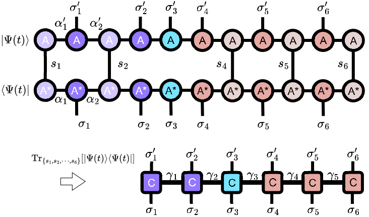Complete positivity (CP)
Let \(U_{\mathrm{tot}}(t)=e^{-i(H_{\mathrm{phys}}\otimes \mathbb{1})t}\). Then
\[ \rho(t)=\mathrm{Tr}_{\mathrm{anc}}\!\left[U_{\mathrm{tot}}(t)\, |\Psi_{\mathrm{pur}}(0)\rangle\langle\Psi_{\mathrm{pur}}(0)|\, U_{\mathrm{tot}}^\dagger(t)\right] =U_{\mathrm{phys}}(t)\,\rho(0)\,U_{\mathrm{phys}}^\dagger(t), \]
which is nothing other than the time evolution of the physical density operator.
By definition, \(\rho(t) = |\Psi_{\mathrm{pur}}(t)\rangle\langle\Psi_{\mathrm{pur}}(t)|\), density operator holds the semidefinite property.
Key Advantage: Guaranteed Positivity
Since the resulting \(\rho_{\text{phys}}(t)\) is obtained by partially tracing a pure state, it is guaranteed to be a positive semidefinite operator by construction, a crucial physical property that can be violated in the vMPDO approach if the bond dimension is too small.
Summary of Tensor Network Methods
| Method | Stochastic MPS | vMPDO | LPMPS |
|---|---|---|---|
| Space | Hilbert | Liouville | Hilbert+Ancilla |
| State | Ensemble of \(|\Psi_p\rangle\) | \(|\rho\rangle\rangle\) | Single \(|\Psi_{\text{pur}}\rangle\) |
| Linear Action | \(\hat{H}\) | \(\hat{\hat{L}}\) | \(H_{\mathrm{phys}}\otimes \mathbb{1}_{\mathrm{anc}}\) |
| Bond Dim. | \(m\) | \(\chi\) | \(r\) |
| Cost | \(\mathcal{O}(K N m^3)\) | \(\mathcal{O}(N \chi^3)\) | \(\mathcal{O}(N r^3)\) |
| Deterministic? | No | Yes | Yes |
| Guaranteed Positivity? | Yes | No | Yes |
| Parallelisation | Distributed Memory | Shared Memory | Shared Memory |
- Stochastic MPS: Requires many trajectories (\(K\)) but often with a smaller bond dimension (\(m\)) per trajectory. Excellent for parallel computing.
- vMPDO/LPMPS: Deterministic but require larger bond dimensions (\(\chi, r\)) and more memory, making them suitable for powerful single-node or shared-memory systems.
Time Evolution via the Time-Dependent Variational Principle (TDVP)
The Challenge
Applying the time evolution operator \(e^{-i\hat{H}\Delta t}\) to an MPS generally increases its bond dimension. To keep the simulation tractable, we must project the evolved state back onto the low-rank MPS manifold.
The TDVP Solution
TDVP provides a principled way to perform this projection. It approximates the exact time evolution by finding the optimal state within the MPS manifold at each timestep.
\[ \frac{d}{dt}|\Psi(t)\rangle = -i \mathcal{P}_{\mathcal{T}}\left( \hat{H}|\Psi(t)\rangle \right) \]
where \(\mathcal{P}_{\mathcal{T}}\) projects onto the tangent space of the MPS manifold.
Refs: Haegeman et al. (PRB, 2016)
TDVP in diagrammatic form
\[ \hat{\mathcal{P}}_{\mathcal{T}} = \sum_{j=1}^{N} \hat{\mathcal{P}}_{\mathrm{L}}^{[1:j-1]} \otimes \hat{1}_j \otimes \hat{\mathcal{P}}_{\mathrm{R}}^{[j+1:N]} - \sum_{j=1}^{N-1} \hat{\mathcal{P}}_{\mathrm{L}}^{[1:j]} \otimes \hat{\mathcal{P}}_{\mathrm{R}}^{[j+1:N]} \]
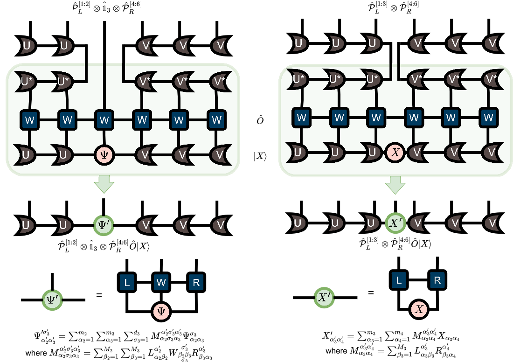Benchmarking
Benchmark System: 18 Nuclear Spins
To test the methods, we used a realistic model of a flavin-tryptophan radical pair with 18 nearby nuclear spins (Hilbert space size: 5,308,416)
Key Hamiltonian Parameters
- Exchange Coupling: \(J = 0.224~\mathrm{mT}\)
- Dipolar Coupling: \(\mathbf{D} = -0.38~\mathrm{mT} \times \mathrm{diag}(-\frac{2}{3}, -\frac{2}{3}, \frac{4}{3})\)
- Reaction Rates: \(k_S = k_T = 1~\mu\mathrm{s}^{-1}\)
- Hyperfine Couplings: 18 isotropic values taken from literature.
Magnetic Fields
Simulations were run with the field aligned along the z-axis at three strengths:
- 0.05 mT: Geomagnetic field strength.
- 0.50 mT: A moderate field.
- 5.00 mT: A strong field where Zeeman interaction dominates.
Semiclassical models: SW and SC (to avoid exponential complexity)
Schulten–Wolynes (SW) approximation
- Nuclear spins \(\mathbf{I}_{i,j}\) are treated as fixed classical vectors.
- Electrons precess in a static effective field \(\mathbf{B}_{\mathrm{eff},i}=\mathbf{B}+\sum_j \mathbf{A}_{i,j}\mathbf{I}_{i,j}\).
- The size of Liouville space is \(4 \times 4 = 16\).
Semiclassical (SC) approximation (by Manolopoulos and Hore)
- Both electronic and nuclear spins are mapped to classical vectors \(\mathbf{S}_i(t) \in \mathbb{R}^3, \mathbf{I}_{i,j}(t) \in \mathbb{R}^3, \mathbf{T}(t) \in \mathbb{R}^{3 \times 3}, \mathbf{1}(t) \in \mathbb{R}\) (two electronic spins as \(4 \times 4=16\) variables and \(3\) variables per a nuclear spin)
Limitations
- No coherence between electronic spin and nuclear spin
- Requires a million of initial states for evaluation
Comparison: Quantum vs. Semiclassical
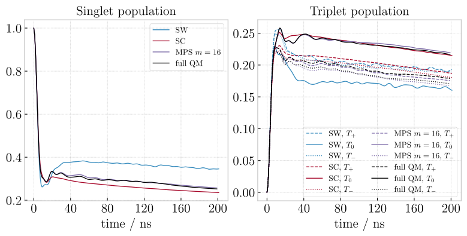- Schulten-Wolynes (SW): Fails to capture the correct dynamics.
- Semiclassical (SC): Captures the general decay but misses the quantum coherent oscillations.
- MPS (\(m=16\)): Accurately reproduces the full quantum mechanical result, even with a very small bond dimension.
Bond Dimension Convergence
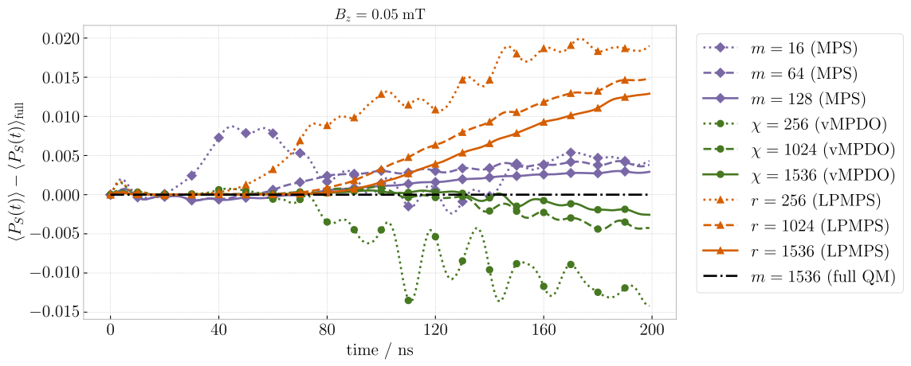Deviation \(\langle P_S(t)\rangle - \langle P_S(t)\rangle_{\text{full}}\) at \(|B_z|=0.05~\text{mT}\).
- The required bond dimension is higher for the deterministic methods (vMPDO, LPMPS) than for each stochastic MPS trajectory.
- However, the stochastic method requires thousands of trajectories (\(K=4096\)) for convergence.
Dependence on Magnetic Field Strength
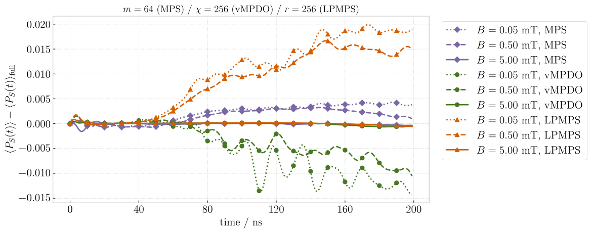Error of different methods at a fixed, moderate bond dimension.
- The accuracy of the tensor network approximation improves significantly at higher magnetic fields.
- Reason: The single-body Zeeman term becomes dominant over the many-body hyperfine and electron-electron couplings.
- This is good news for simulating typical EPR experiment (\(>10~\mathrm{mT}\)).
Scalability with Number of Nuclear Spins
A simplified model \(B_z = 5.0~\mathrm{mT}, J=2.5~\mathrm{mT}, a_{1j} = \frac{3.0}{N_1} \mathrm{mT}, a_{2j} = \frac{9.0}{N_2} \mathrm{mT}\) was used to test scalability up to 60 nuclei.
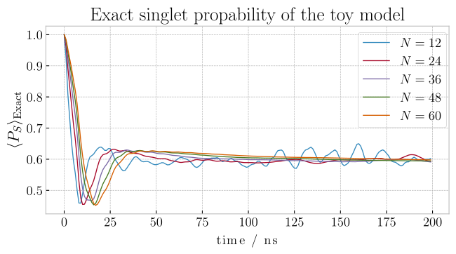

- As more nuclei are added, the coherent oscillations are washed out, leading to smoother dynamics.
- The LPMPS method maintains excellent accuracy ($$1% deviation) even as the system size grows to 60 nuclei, a regime completely inaccessible to exact methods.
Time Scaling
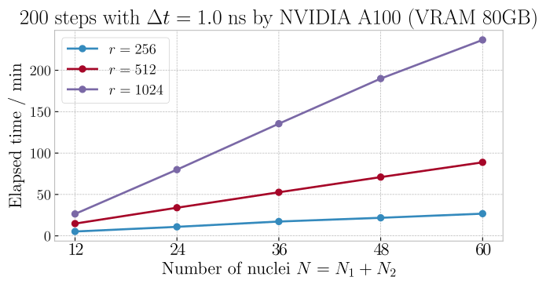- Elapsed time scales linearly with the number of nuclear spins.
- Elapsed time scales cubically with the bond dimension.
Magnetosensitivity of Quantum Birds
The Radical Pair Hypothesis of Avian Magnetoreception
The Hypothesis
A light-activated radical pair, formed in cryptochrome proteins in a bird’s retina, acts as a chemical magnetic compass.
- The Earth’s magnetic field affects the S-T conversion rate, changing the amount of signalling product formed.
- The bird perceives this change as a visual pattern, allowing it to “see” the magnetic field lines.
- Magnetic sensitivity of cryptochrome 4 (CRY4) from the European robin has been demonstrated experimentally (Xi et al, Nature 2021).
YouTube: https://youtu.be/0SPD2r0xV8k
Application: Flavin–Tryptophan Radical Pair in CRY4
The System
We model the FAD\(^{\bullet-}\) – TrpH\(^{\bullet+}\) radical pair in avian cryptochrome, using realistic, anisotropic hyperfine and electron-electron couplings.
The flavin (FAD) and tryptophan (Trp) molecules involved in the radical pair.
Kinetic scheme of cryptochrome radical pairs (cartoon)

Refs: Xu et al. (Nature 2021)
Modelling Electron Hopping Between Two Radical Pairs
In cryptochrome, the electron hole can hop between different tryptophan residues, creating a network of radical pairs (e.g., RP\(_C\) and RP\(_D\)).
- We model the dynamics of two coupled radical pairs (FAD/TrpC and FAD/TrpD) sharing a common flavin.
- The hopping electron site is described by
\[ \begin{gathered} \mathrm{span}\{|\uparrow\uparrow 0\rangle, |\uparrow\downarrow 0\rangle, |\downarrow\uparrow 0\rangle, |\downarrow\downarrow 0\rangle, |\uparrow 0 \uparrow\rangle, |\uparrow 0 \downarrow\rangle, |\downarrow 0 \uparrow\rangle, |\downarrow 0 \downarrow\rangle\} \\ = \mathrm{span}\{|T_{+}^{\mathrm{C}}\rangle, |T_0^{\mathrm{C}}\rangle, |S^{\mathrm{C}}\rangle, |T_-^{\mathrm{C}}\rangle, |T_+^{\mathrm{D}}\rangle, |T_0^{\mathrm{D}}\rangle, |S^{\mathrm{D}}\rangle, |T_-^{\mathrm{D}}\rangle\} \end{gathered} \]
and Lindblad master equation,
\[ \begin{gathered} \mathcal{D}[\hat{\rho}] = \sum_{j\in\{\mathrm{C}\to\mathrm{D}, \mathrm{D}\to\mathrm{C}\}} \hat{L}_{j} \hat{\rho} \hat{L}_{j}^\dagger - \frac{1}{2} \hat{L}_{j}^\dagger \hat{L}_{j} \hat{\rho} - \frac{1}{2} \hat{\rho} \hat{L}_{j}^\dagger \hat{L}_{j} \\ \hat{L}_{\mathrm{C}\to \mathrm{D}} = \sqrt{k_{\mathrm{C}\to \mathrm{D}}} \left( |\mathrm{D}\rangle\langle\mathrm{C}|\right), \quad \hat{L}_{\mathrm{D}\to \mathrm{C}} = \sqrt{k_{\mathrm{D}\to \mathrm{C}}} \left( |\mathrm{C}\rangle\langle\mathrm{D}|\right) \end{gathered} \]
Vectorised form
Use \(\mathrm{vec}(A\rho B)=(B^\top\!\otimes A)|\rho\rangle\rangle\) to build \(\hat{\hat{L}}\) and evolve as MPS.
Hamiltonian parameters
Hamiltonian parameters:
- \(J\): exchange coupling taken from experiment by Gravell et al. (JACS, 2025).
- \(J_{C} = 0.011 ~\mathrm{mT}\)
- \(J_{D} = 0.001 ~\mathrm{mT}\)
- \(\mathbf{D}\): dipolar tensor taken from point-dipole approximation and crystal structure
- \(\vec{r}_{C} = (9.480, -13.675, 5.388)\) Å
- \(\vec{r}_{D} = (8.980, -18.684, 4.159)\) Å
\[ \mathbf{D}_{C}-2J_{C}\mathbb{1} = \begin{pmatrix} -0.019 & -0.441 & -0.174 \\ -0.441 & -0.311 & 0.251 \\ -0.174 & 0.251 & -0.226 \end{pmatrix} ~\mathrm{mT} \]
\[ \mathbf{D}_{D}-2J_{D}\mathbb{1} = \begin{pmatrix} 0.068 & 0.221 & -0.049 \\ 0.221 & -0.286 & 0.102 \\ -0.049 & 0.102 & 0.152 \end{pmatrix} ~\mathrm{mT} \]
- \(\mathbf{A}_{i,j}\): hyperfine tensor taken from electronic structure calculation by ORCA
- \(|B|\): geomagnetic field strength 0.05 mT
Singlet yield
Definition:
\[ \mathbf{B} = B_0 [\cos\theta \cos\phi, \cos\theta \sin\phi, \sin\theta] \]
We set \(B_0 = 0.05 ~\mathrm{mT}\) and \(\phi = 0\).
\[ \Phi_S(\tau; \theta) = k_S \int_{0}^{\tau} \! dt~\mathrm{Tr}\!\left[\rho(t; \theta)\,\hat{P}_S\right]. \]
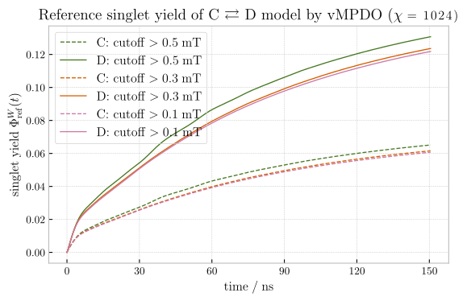
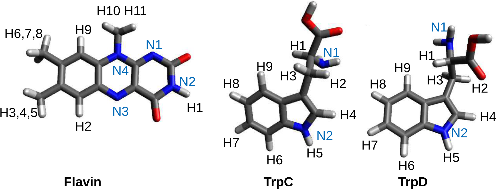
Anisotropic Magnetosensitivity at 0.05 mT with limited nuclear spins
The relative change in singlet yield, \(\Phi_S\), as a function of the magnetic field orientation (\(\theta\)).
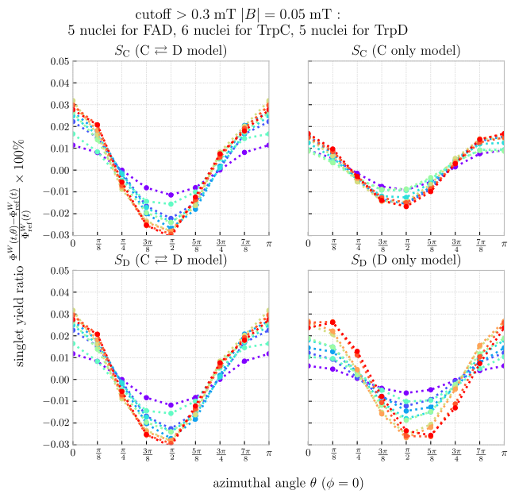
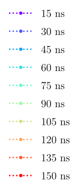
Anisotropic magnetosensitivity at 0.05 mT
Up to 30 nuclear spins.
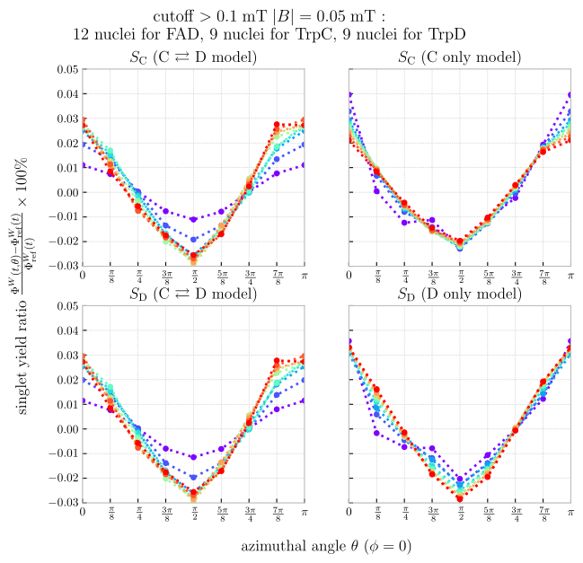
Observation
Time-dependence of \(\Phi_S(\tau; \theta)\) changes. only 0.06 % anisotropy
Anisotropic Magnetosensitivity at 5.0 mT (100 \(\times\) higher)
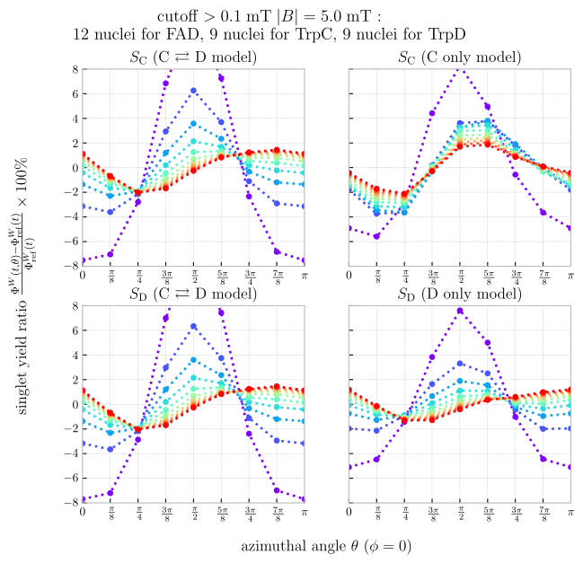
Observation
- The anisotropy is now much larger (\(\sim 5\%\)).
- The orientation is completely different from low-field case.
Conclusion & Outlook
Conclusion & Outlook
What We Achieved
- introduced and benchmarked three tensor-network formalisms (MPS, vMPDO, LPMPS) for simulating radical-pair systems.
- enabled simulations with 30–60 nuclei.
- reproduced the anisotropic magnetosensitivity of the cryptochrome radical pair, showing distinct behaviours at low and high fields.
Limitations and Next Steps
- Longer timescales (\(> 1~\mu\mathrm{s}\)): Entanglement growth remains a challenge, requiring larger bond dimensions or new techniques.
- Towards realism:
- Incorporate more accurate parameters from ab initio calculations (\(J, \mathbf{D}, \mathbf{A}_{i,j}\)).
- Couple spin dynamics to molecular motion from MD simulations.
- Include other relaxation mechanisms (e.g., Redfield theory).
- Model the full multi-radical hopping network.
Modelling Radical Pair Quantum Spin Dynamics with Tensor Networks